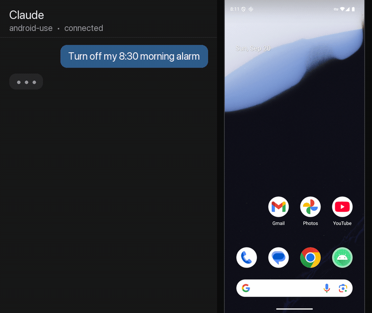

Computer-use, for Android. Let Claude see and operate a real Android phone — tap, type, navigate settings, launch apps — over cellular, from anywhere. Open source, via MCP.
⭐ Star on GitHub Quick start
It reads the phone's real UI tree and acts on labelled elements by index — far more reliable than screenshotting and guessing coordinates.
Cellular + Tailscale means the phone needs no Wi-Fi and no cable. Help someone with their phone from another city.
Types Telugu, Hindi, emoji — anything — via ACTION_SET_TEXT, which adb input text can't do.
On-device app allowlist, time-boxed grants, an always-on notification with a Stop button. No lock-screen bypass.
Every tap is verified against the screen Claude actually saw. If a pop-up moved things, it follows the element or refuses — it never taps whatever landed at that spot.
Irreversible taps wait for an explicit yes — and the person holding the phone gets a big "Is that OK?" card first. Banking apps are off-limits.
"Why doesn't my phone ring?" — it reads the ringer, sees silent mode, fixes it. Volume, text size, brightness, Do Not Disturb, flashlight, in one step.
When the UI has no labels, screenshots come back with the same numbered boxes Claude taps by — the best of the accessibility tree and vision.
git clone https://github.com/bsaisuryacharan/android-use cd android-use && ./install.sh # enable USB debugging on the phone, then just talk to Claude: # "turn off my 7am alarm" · "why isn't my internet working?"
Built for the people who find phones hard — and for anyone who wants to see what an AI agent can do with a real device. Read the code & the honest security model →